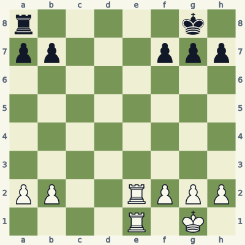
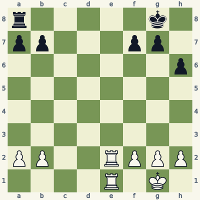
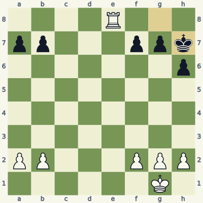
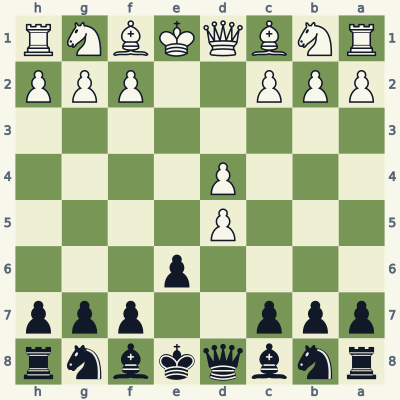
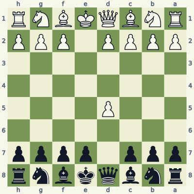
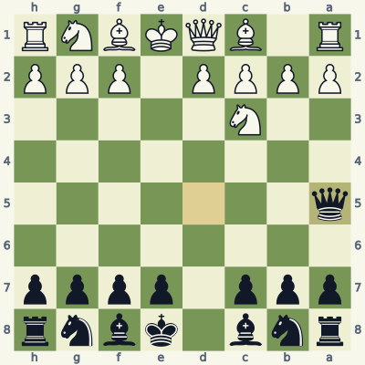
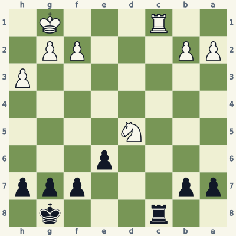
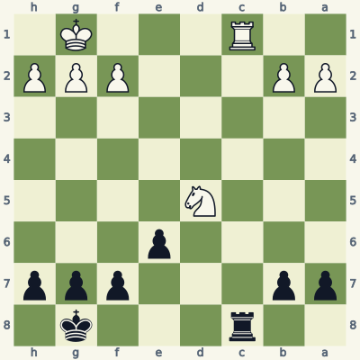
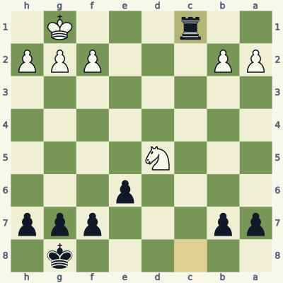

For players who know how the pieces move. Read the model, try the exercise without the answer, then explain the result aloud. Use a board and make the moves one at a time. Spend about 20 minutes per lesson; repeat it tomorrow and a week later.
Check the immediate threat, choose candidates, test the opponent's checks and captures, then inspect the final position. Some questions ask for a safe move or correct diagnosis rather than a unique best move. Sample replies illustrate ideas unless the explanation says they are forced.
Notation and replay help
K king · Q queen · R rook · B bishop · N knight. A pawn move has no piece letter. Nf3 means knight to f3; Rxc6 means rook captures on c6; + means check; # means mate; O-O means kingside castling; e8=Q means promotion. A line beginning 1... starts with Black. Diagrams face the player to move.
The PGN download loads starting positions and sample lines into a chess program. Position codes (FEN) let you recreate individual boards. The PDF and website work without an account.
Lesson 02.1
A check narrows the replies
Calculate a small tree accurately before trying a long line. At every check, test three responses: capture the checker, block the line, or move the king.

Model A · White to movePosition coder5k1/pp3ppp/8/8/8/8/PP2RPPP/4R1K1 w - - 0 1
Read the position
White has two rooks on the e-file. The rear rook on e1 supports the rook on e2.
Black's king has pawns on f7, g7 and h7, so it cannot escape to the seventh rank.
After Re8+, Black's rook on a8 can capture along the eighth rank.
1. Re8+ Rxe8 2. Rxe8#
The rook on e2 plays Re8+. Black cannot run to f8 or h8 because the rook attacks those squares; its own pawns occupy the escape squares below. There is no interposition available. ...Rxe8 is the only legal reply.
Now the e1-rook follows with Rxe8#. Capturing the first checking rook removed Black's last defender. Stop and prove mate by checking every king destination, capture and block, rather than assuming the familiar back-rank pattern is enough.
Exercise B · White to move
Take five minutes. Write your reason and the opponent's reply before opening the answer.

Inspect what changed from the model.Position coder5k1/pp3pp1/7p/8/8/8/PP2RPPP/4R1K1 w - - 0 1
What new escape square has the h-pawn move created?
Play the same exchange on e8. Is the second rook capture checkmate?
What has White gained even if Black survives?
Read the full explanation
The pawn on h6 leaves h7 empty. Unlike the seventh-rank squares occupied by pawns in Model A, h7 can be a legal king destination.
Re8+ Rxe8 Rxe8+ is check, but Black has ...Kh7. The rook on e8 attacks the eighth rank, not h7. A plus sign is correct; a mate sign is not.
White began with two rooks against one and finishes with one rook against none. That is a winning material advantage in this simple position, but it still requires conversion. The calculation must report that result accurately instead of calling it mate.
1. Re8+ Rxe8 2. Rxe8+ Kh7

Position after the sample line; the last move is highlighted.
Score your explanation: 1 point for the fact and 1 for its consequence in each answer, out of 6. At 4 or below, replay the model and revisit tomorrow.
Where the idea can fail
An identical-looking line may end in check instead of mate if one pawn has moved. Treat the final board as a new position and verify its legal moves.
Use it in your own games
For three checking sequences from your games, set up the final position and list every legal reply. Mark where you stopped calculating too early.
Before comparing moves, list only moves that are legal in the actual position. A recapture can restore material yet cost time if it exposes the queen to development with an attack.

Model A · Black to movePosition codernbqkbnr/ppp2ppp/4p3/3P4/3P4/8/PPP2PPP/RNBQKBNR b KQkq - 0 3
Read the position
White's pawn on d5 has just captured Black's d-pawn.
Black's e6-pawn can capture diagonally to d5.
The queen on d8 can also reach d5, but may become a target for Nc3.
3... exd5 4. Nf3 Nf6
...exd5 restores material and puts a pawn in the center without exposing the queen. White and Black can then develop with Nf3 and ...Nf6. This is a sound, uncomplicated choice in the French Exchange structure.
Compare ...Qxd5 Nc3: White develops a knight while attacking the queen. Black must account for that threat. The queen recapture is legal and does not lose the queen by force; it is less convenient here because the pawn recapture accomplishes the job without that extra target.
Exercise B · Black to move
Take five minutes. Write your reason and the opponent's reply before opening the answer.

Inspect what changed from the model.Position codernbqkbnr/ppp1pppp/8/3P4/8/8/PPPP1PPP/RNBQKBNR b KQkq - 0 2
Can Black play ...exd5 in this position? Explain using the pawn's starting square.
Show a legal immediate recapture and White's developing attack on it.
Name a safe queen square after that attack.
Read the full explanation
No. The e-pawn is still on e7, and from there it captures d6 or f6, not d5. You cannot transfer the French recapture to the Scandinavian position.
...Qxd5 regains the pawn. Nc3 develops with an attack on the queen. Black can also choose the different Scandinavian approach ...Nf6; this lesson examines the immediate queen recapture.
...Qa5 is a legal, established retreat. The queen travels d5-c5-b5-a5. It remains active while Black prepares development. The move costs a tempo, but that fact alone does not refute the opening.
2... Qxd5 3. Nc3 Qa5

Position after the sample line; the last move is highlighted.
Score your explanation: 1 point for the fact and 1 for its consequence in each answer, out of 6. At 4 or below, replay the model and revisit tomorrow.
Where the idea can fail
"Never recapture with the queen" is too broad. In another opening the alternative pawn recapture may not exist, and an early queen move may be a normal part of the plan.
Use it in your own games
After an exchange, list every legal recapture. Compare material first, king safety second, and the opponent's next developing attack third.
A recapture is a candidate, not an obligation. An in-between move can be stronger when it gives check and forces the opponent to answer before recovering material.

Model A · Black to movePosition code2r3k1/pp3ppp/4p3/3N4/8/7P/PP3PP1/2R3K1 b - - 0 1
Read the position
The rooks on c8 and c1 face each other on an otherwise clear file.
Black's e6-pawn can capture the knight on d5.
White's king can answer a back-rank check by going to h2 because its h-pawn is on h3.
1... Rxc1+ 2. Kh2 exd5
Black first plays ...Rxc1+. White must answer the check and cannot save the knight at the same time. After Kh2, ...exd5 collects the knight as well. Put the check before the pawn capture.
Count the full sequence: Black captures a rook and then a knight while keeping its own rook. Reversing the order is disastrous because White's rook gains access to Black's unprotected back rank. Move order is the entire tactic.
Exercise B · Black to move
Take five minutes. Write your reason and the opponent's reply before opening the answer.

Inspect what changed from the model.Position code2r3k1/pp3ppp/4p3/3N4/8/8/PP3PPP/2R3K1 b - - 0 1
Which pawn changed, and which white king escape did that remove?
What is Black's strongest forcing move?
Should Black plan to take the knight on the next move?
Read the full explanation
White's h-pawn is now on h2. The king cannot move onto its own pawn, so the h2 escape from Model A has disappeared.
...Rxc1# is immediate checkmate. The rook checks along the first rank, White cannot capture or block, and the king has no safe destination.
There is no next move: the game has ended. Capturing the knight is irrelevant. A good calculation reports the earliest decisive result rather than automatically completing a memorized sequence.
1... Rxc1#

Position after the sample line; the last move is highlighted.
Score your explanation: 1 point for the fact and 1 for its consequence in each answer, out of 6. At 4 or below, replay the model and revisit tomorrow.
Where the idea can fail
After ...exd5? White has Rxc8#. Black's king is boxed in by its own pawns. Do not assume that recapturing an exposed piece is urgent enough to skip a check scan.
Use it in your own games
Before every automatic recapture in a training game, pause for checks on both sides. Save one example where the order of two moves changed the result.
All six starts and listed moves in this book were checked for legality. Stockfish 19 reviewed candidates at depth 18. Available endings with seven or fewer pieces were checked against the Lichess tablebase, including every move of the demonstrated endgame lines. A strategic sample is not a claim of unique best play.
These original, AI-assisted explanations were written around the positions and revised after checking. The lesson data and validation notes make the examples inspectable. Further reading and practice: